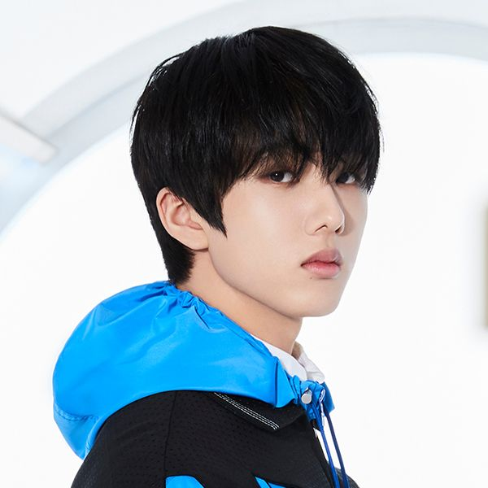

- MARK
- RENJUN
- JENO
- HAECHAN
- JAEMIN
- CHENLE
- JISUNG
JISUNG

SM엔터테인먼트의 보이그룹 NCT와 서브 그룹 NCT DREAM, NCT U의 멤버이자 막내. 팀에서 메인댄서를 맡고 있다.
데뷔 전부터 아역 배우와 팝핀현준 키즈크루 등으로 연예계 활동을 했었고 2013년 댄싱9 무대를 선 후 SM에 캐스팅되어서 12월 17일 SM Rookies에 공개되었다.
캐치프레이즈는 NCT (DREAM)의 막내 지성 또는 막내 온 탑 지성.